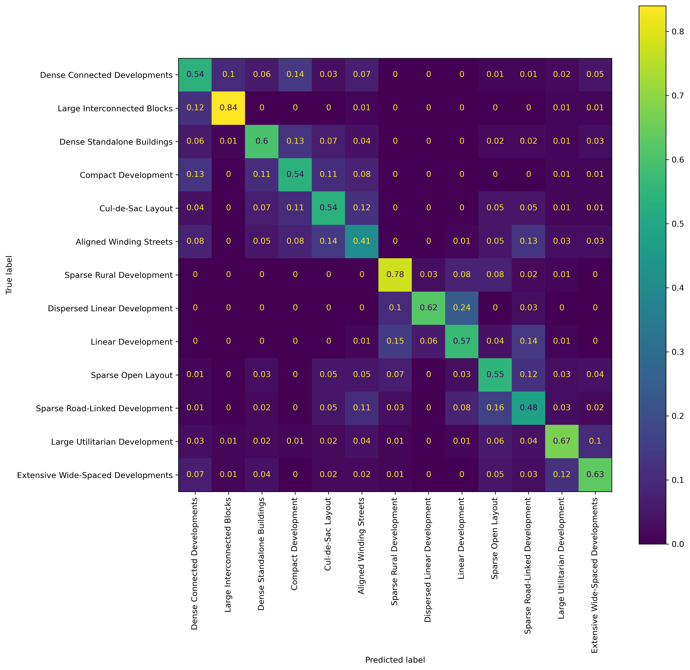

import glob
import geopandas as gpd
import matplotlib.pyplot as plt
import numba
import numpy as np
import pandas as pd
from libpysal.graph import read_parquet
from sklearn.preprocessing import PowerTransformer, RobustScaler, StandardScaler
from sklearn.ensemble import RandomForestClassifier
from core.utils import used_keys
from palettable.colorbrewer.qualitative import Set3_12
from sklearn.metrics import davies_bouldin_score, f1_score
from sklearn.model_selection import GridSearchCV
from sklearn.calibration import CalibratedClassifierCV
from sklearn.ensemble import RandomForestClassifier
from sklearn.datasets import make_moons
from sklearn import model_selection
from sklearn.metrics import accuracy_score, balanced_accuracy_score, make_scorer
from core.generate_predictions import read_train_test, get_cluster_names, get_level_cutEurofab model training
v = 'v3'
sample_size = 600_000
mapping_level = 4
train_test_iteration = 7Generate the train test data for the specified iteration and train the model
%%time
X_resampled, y_resampled = read_train_test(train_test_iteration, mapping_level, sample_size)
from sklearn.ensemble import HistGradientBoostingClassifier
model = HistGradientBoostingClassifier(random_state=123, verbose=1,
learning_rate = 0.03,
max_depth = None,
max_iter = 120,
max_leaf_nodes=None,
max_features=.5
)
model.fit(X_resampled, y_resampled)
print(model.score(X_resampled, y_resampled))final_without_noise
6 600000
1 600000
7 600000
8 600000
14 600000
2 600000
15 600000
13 600000
5 600000
16 600000
9 600000
12 600000
11 600000
Name: count, dtype: int64
Binning 8.087 GB of training data: 3.625 s
Binning 0.899 GB of validation data: 0.393 s
Fitting gradient boosted rounds:
[1/120] 13 trees, 893629 leaves (68740 on avg), max depth = 59, train loss: 2.32222, val loss: 2.36821, in 129.254s
[2/120] 13 trees, 3523422 leaves (271032 on avg), max depth = 157, train loss: 2.13320, val loss: 2.21806, in 366.993s
[3/120] 13 trees, 3553717 leaves (273362 on avg), max depth = 152, train loss: 1.97650, val loss: 2.09519, in 373.911s
[4/120] 13 trees, 3552116 leaves (273239 on avg), max depth = 176, train loss: 1.84211, val loss: 1.99092, in 377.135s
[5/120] 13 trees, 3548134 leaves (272933 on avg), max depth = 151, train loss: 1.72445, val loss: 1.90045, in 376.539s
[6/120] 13 trees, 3547731 leaves (272902 on avg), max depth = 164, train loss: 1.61958, val loss: 1.82023, in 377.085s
[7/120] 13 trees, 3547447 leaves (272880 on avg), max depth = 147, train loss: 1.52518, val loss: 1.74856, in 378.116s
[8/120] 13 trees, 3546411 leaves (272800 on avg), max depth = 148, train loss: 1.43953, val loss: 1.68391, in 378.931s
[9/120] 13 trees, 3545132 leaves (272702 on avg), max depth = 144, train loss: 1.36107, val loss: 1.62483, in 378.053s
[10/120] 13 trees, 3545586 leaves (272737 on avg), max depth = 152, train loss: 1.28891, val loss: 1.57076, in 377.779s
[11/120] 13 trees, 3544338 leaves (272641 on avg), max depth = 145, train loss: 1.22210, val loss: 1.52069, in 378.350s
[12/120] 13 trees, 3544490 leaves (272653 on avg), max depth = 145, train loss: 1.16011, val loss: 1.47441, in 380.143s
[13/120] 13 trees, 3545625 leaves (272740 on avg), max depth = 129, train loss: 1.10232, val loss: 1.43133, in 380.879s
[14/120] 13 trees, 3544251 leaves (272634 on avg), max depth = 146, train loss: 1.04834, val loss: 1.39104, in 381.777s
[15/120] 13 trees, 3544744 leaves (272672 on avg), max depth = 146, train loss: 0.99778, val loss: 1.35346, in 381.633s
[16/120] 13 trees, 3544013 leaves (272616 on avg), max depth = 140, train loss: 0.95035, val loss: 1.31827, in 381.941s
[17/120] 13 trees, 3545107 leaves (272700 on avg), max depth = 131, train loss: 0.90571, val loss: 1.28509, in 380.251s
[18/120] 13 trees, 3545243 leaves (272711 on avg), max depth = 136, train loss: 0.86369, val loss: 1.25399, in 383.591s
[19/120] 13 trees, 3545469 leaves (272728 on avg), max depth = 118, train loss: 0.82398, val loss: 1.22455, in 384.120s
[20/120] 13 trees, 3545363 leaves (272720 on avg), max depth = 166, train loss: 0.78651, val loss: 1.19675, in 385.436s
[21/120] 13 trees, 3546150 leaves (272780 on avg), max depth = 127, train loss: 0.75105, val loss: 1.17043, in 385.135s
[22/120] 13 trees, 3545906 leaves (272762 on avg), max depth = 125, train loss: 0.71745, val loss: 1.14549, in 384.697s
[23/120] 13 trees, 3546285 leaves (272791 on avg), max depth = 121, train loss: 0.68560, val loss: 1.12183, in 384.964s
[24/120] 13 trees, 3545721 leaves (272747 on avg), max depth = 137, train loss: 0.65540, val loss: 1.09940, in 386.259s
[25/120] 13 trees, 3547225 leaves (272863 on avg), max depth = 131, train loss: 0.62670, val loss: 1.07798, in 386.087s
[26/120] 13 trees, 3546474 leaves (272805 on avg), max depth = 127, train loss: 0.59944, val loss: 1.05761, in 387.003s
[27/120] 13 trees, 3546956 leaves (272842 on avg), max depth = 126, train loss: 0.57350, val loss: 1.03825, in 386.453s
[28/120] 13 trees, 3546961 leaves (272843 on avg), max depth = 119, train loss: 0.54881, val loss: 1.01974, in 388.014s
[29/120] 13 trees, 3548322 leaves (272947 on avg), max depth = 131, train loss: 0.52532, val loss: 1.00217, in 388.306s
[30/120] 13 trees, 3547040 leaves (272849 on avg), max depth = 132, train loss: 0.50294, val loss: 0.98530, in 386.288s
[31/120] 13 trees, 3548367 leaves (272951 on avg), max depth = 118, train loss: 0.48159, val loss: 0.96917, in 388.236s
[32/120] 13 trees, 3549004 leaves (273000 on avg), max depth = 127, train loss: 0.46125, val loss: 0.95380, in 388.696s
[33/120] 13 trees, 3549247 leaves (273019 on avg), max depth = 131, train loss: 0.44185, val loss: 0.93913, in 387.675s
[34/120] 13 trees, 3548727 leaves (272979 on avg), max depth = 136, train loss: 0.42334, val loss: 0.92506, in 389.091s
[35/120] 13 trees, 3549713 leaves (273054 on avg), max depth = 125, train loss: 0.40565, val loss: 0.91154, in 389.230s
[36/120] 13 trees, 3549362 leaves (273027 on avg), max depth = 121, train loss: 0.38876, val loss: 0.89856, in 387.581s
[37/120] 13 trees, 3549728 leaves (273056 on avg), max depth = 114, train loss: 0.37265, val loss: 0.88617, in 391.615s
[38/120] 13 trees, 3550534 leaves (273118 on avg), max depth = 126, train loss: 0.35725, val loss: 0.87429, in 392.228s
[39/120] 13 trees, 3550237 leaves (273095 on avg), max depth = 134, train loss: 0.34254, val loss: 0.86290, in 392.463s
[40/120] 13 trees, 3550816 leaves (273139 on avg), max depth = 113, train loss: 0.32848, val loss: 0.85204, in 391.219s
[41/120] 13 trees, 3550844 leaves (273141 on avg), max depth = 118, train loss: 0.31504, val loss: 0.84155, in 393.043s
[42/120] 13 trees, 3551307 leaves (273177 on avg), max depth = 125, train loss: 0.30218, val loss: 0.83148, in 390.421s
[43/120] 13 trees, 3550584 leaves (273121 on avg), max depth = 118, train loss: 0.28987, val loss: 0.82175, in 396.341s
[44/120] 13 trees, 3551836 leaves (273218 on avg), max depth = 122, train loss: 0.27809, val loss: 0.81238, in 397.013s
[45/120] 13 trees, 3551863 leaves (273220 on avg), max depth = 118, train loss: 0.26681, val loss: 0.80339, in 394.360s
[46/120] 13 trees, 3551294 leaves (273176 on avg), max depth = 117, train loss: 0.25604, val loss: 0.79481, in 395.175s
[47/120] 13 trees, 3551400 leaves (273184 on avg), max depth = 116, train loss: 0.24573, val loss: 0.78656, in 397.259s
[48/120] 13 trees, 3551399 leaves (273184 on avg), max depth = 116, train loss: 0.23586, val loss: 0.77865, in 399.250s
[49/120] 13 trees, 3552174 leaves (273244 on avg), max depth = 112, train loss: 0.22641, val loss: 0.77098, in 396.697s
[50/120] 13 trees, 3551382 leaves (273183 on avg), max depth = 113, train loss: 0.21734, val loss: 0.76362, in 396.233s
[51/120] 13 trees, 3552454 leaves (273265 on avg), max depth = 112, train loss: 0.20867, val loss: 0.75651, in 393.356s
[52/120] 13 trees, 3552122 leaves (273240 on avg), max depth = 116, train loss: 0.20037, val loss: 0.74967, in 394.411s
[53/120] 13 trees, 3552395 leaves (273261 on avg), max depth = 112, train loss: 0.19241, val loss: 0.74307, in 395.038s
[54/120] 13 trees, 3553077 leaves (273313 on avg), max depth = 119, train loss: 0.18478, val loss: 0.73671, in 395.145s
[55/120] 13 trees, 3553441 leaves (273341 on avg), max depth = 112, train loss: 0.17747, val loss: 0.73058, in 396.733s
[56/120] 13 trees, 3553053 leaves (273311 on avg), max depth = 122, train loss: 0.17046, val loss: 0.72464, in 396.646s
[57/120] 13 trees, 3552633 leaves (273279 on avg), max depth = 117, train loss: 0.16375, val loss: 0.71895, in 397.845s
[58/120] 13 trees, 3554456 leaves (273419 on avg), max depth = 115, train loss: 0.15731, val loss: 0.71345, in 397.741s
[59/120] 13 trees, 3553810 leaves (273370 on avg), max depth = 126, train loss: 0.15114, val loss: 0.70817, in 396.939s
[60/120] 13 trees, 3553886 leaves (273375 on avg), max depth = 112, train loss: 0.14523, val loss: 0.70306, in 396.179s
[61/120] 13 trees, 3553906 leaves (273377 on avg), max depth = 109, train loss: 0.13955, val loss: 0.69814, in 395.085s
[62/120] 13 trees, 3554587 leaves (273429 on avg), max depth = 112, train loss: 0.13411, val loss: 0.69335, in 398.457s
[63/120] 13 trees, 3553701 leaves (273361 on avg), max depth = 125, train loss: 0.12889, val loss: 0.68878, in 401.568s
[64/120] 13 trees, 3554137 leaves (273395 on avg), max depth = 122, train loss: 0.12388, val loss: 0.68431, in 402.053s
[65/120] 13 trees, 3553766 leaves (273366 on avg), max depth = 113, train loss: 0.11908, val loss: 0.68003, in 401.556s
[66/120] 13 trees, 3554696 leaves (273438 on avg), max depth = 122, train loss: 0.11447, val loss: 0.67587, in 401.360s
[67/120] 13 trees, 3554903 leaves (273454 on avg), max depth = 109, train loss: 0.11004, val loss: 0.67183, in 402.173s
[68/120] 13 trees, 3554957 leaves (273458 on avg), max depth = 109, train loss: 0.10580, val loss: 0.66801, in 402.843s
[69/120] 13 trees, 3554710 leaves (273439 on avg), max depth = 114, train loss: 0.10173, val loss: 0.66433, in 403.002s
[70/120] 13 trees, 3554676 leaves (273436 on avg), max depth = 108, train loss: 0.09782, val loss: 0.66072, in 403.448s
[71/120] 13 trees, 3554488 leaves (273422 on avg), max depth = 109, train loss: 0.09407, val loss: 0.65724, in 403.679s
[72/120] 13 trees, 3554866 leaves (273451 on avg), max depth = 113, train loss: 0.09047, val loss: 0.65385, in 404.623s
[73/120] 13 trees, 3555466 leaves (273497 on avg), max depth = 113, train loss: 0.08701, val loss: 0.65062, in 402.190s
[74/120] 13 trees, 3554944 leaves (273457 on avg), max depth = 129, train loss: 0.08370, val loss: 0.64749, in 403.485s
[75/120] 13 trees, 3554835 leaves (273448 on avg), max depth = 116, train loss: 0.08051, val loss: 0.64447, in 404.000s
[76/120] 13 trees, 3554684 leaves (273437 on avg), max depth = 115, train loss: 0.07745, val loss: 0.64156, in 402.361s
[77/120] 13 trees, 3554047 leaves (273388 on avg), max depth = 112, train loss: 0.07451, val loss: 0.63871, in 401.778s
[78/120] 13 trees, 3555476 leaves (273498 on avg), max depth = 118, train loss: 0.07168, val loss: 0.63592, in 405.132s
[79/120] 13 trees, 3556083 leaves (273544 on avg), max depth = 109, train loss: 0.06897, val loss: 0.63330, in 403.025s
[80/120] 13 trees, 3555077 leaves (273467 on avg), max depth = 115, train loss: 0.06637, val loss: 0.63078, in 405.793s
[81/120] 13 trees, 3555728 leaves (273517 on avg), max depth = 120, train loss: 0.06386, val loss: 0.62834, in 404.846s
[82/120] 13 trees, 3555683 leaves (273514 on avg), max depth = 116, train loss: 0.06146, val loss: 0.62600, in 403.964s
[83/120] 13 trees, 3555347 leaves (273488 on avg), max depth = 107, train loss: 0.05916, val loss: 0.62372, in 403.931s
[84/120] 13 trees, 3555362 leaves (273489 on avg), max depth = 113, train loss: 0.05694, val loss: 0.62152, in 403.907s
[85/120] 13 trees, 3555445 leaves (273495 on avg), max depth = 114, train loss: 0.05481, val loss: 0.61940, in 403.666s
[86/120] 13 trees, 3555369 leaves (273489 on avg), max depth = 107, train loss: 0.05276, val loss: 0.61734, in 405.019s
[87/120] 13 trees, 3555200 leaves (273476 on avg), max depth = 109, train loss: 0.05079, val loss: 0.61536, in 404.703s
[88/120] 13 trees, 3555591 leaves (273507 on avg), max depth = 110, train loss: 0.04890, val loss: 0.61348, in 405.277s
[89/120] 13 trees, 3555534 leaves (273502 on avg), max depth = 116, train loss: 0.04708, val loss: 0.61166, in 405.436s
[90/120] 13 trees, 3555090 leaves (273468 on avg), max depth = 121, train loss: 0.04533, val loss: 0.60990, in 405.089s
[91/120] 13 trees, 3556039 leaves (273541 on avg), max depth = 111, train loss: 0.04365, val loss: 0.60817, in 406.238s
[92/120] 13 trees, 3555579 leaves (273506 on avg), max depth = 119, train loss: 0.04203, val loss: 0.60652, in 404.628s
[93/120] 13 trees, 3555924 leaves (273532 on avg), max depth = 107, train loss: 0.04048, val loss: 0.60491, in 406.020s
[94/120] 13 trees, 3555315 leaves (273485 on avg), max depth = 120, train loss: 0.03898, val loss: 0.60331, in 406.914s
[95/120] 13 trees, 3556460 leaves (273573 on avg), max depth = 105, train loss: 0.03754, val loss: 0.60183, in 408.578s
[96/120] 13 trees, 3555297 leaves (273484 on avg), max depth = 114, train loss: 0.03616, val loss: 0.60038, in 408.850s
[97/120] 13 trees, 3555891 leaves (273530 on avg), max depth = 113, train loss: 0.03483, val loss: 0.59898, in 409.125s
[98/120] 13 trees, 3555591 leaves (273507 on avg), max depth = 112, train loss: 0.03355, val loss: 0.59763, in 407.951s
[99/120] 13 trees, 3555537 leaves (273502 on avg), max depth = 105, train loss: 0.03232, val loss: 0.59637, in 406.495s
[100/120] 13 trees, 3555783 leaves (273521 on avg), max depth = 110, train loss: 0.03114, val loss: 0.59514, in 407.627s
[101/120] 13 trees, 3556060 leaves (273543 on avg), max depth = 108, train loss: 0.03000, val loss: 0.59393, in 405.682s
[102/120] 13 trees, 3556198 leaves (273553 on avg), max depth = 105, train loss: 0.02890, val loss: 0.59280, in 407.439s
[103/120] 13 trees, 3556003 leaves (273538 on avg), max depth = 114, train loss: 0.02785, val loss: 0.59166, in 406.388s
[104/120] 13 trees, 3555528 leaves (273502 on avg), max depth = 108, train loss: 0.02684, val loss: 0.59064, in 407.533s
[105/120] 13 trees, 3556125 leaves (273548 on avg), max depth = 103, train loss: 0.02586, val loss: 0.58962, in 407.553s
[106/120] 13 trees, 3554873 leaves (273451 on avg), max depth = 111, train loss: 0.02492, val loss: 0.58868, in 407.946s
[107/120] 13 trees, 3555562 leaves (273504 on avg), max depth = 105, train loss: 0.02402, val loss: 0.58776, in 407.907s
[108/120] 13 trees, 3555250 leaves (273480 on avg), max depth = 98, train loss: 0.02315, val loss: 0.58688, in 405.583s
[109/120] 13 trees, 3555734 leaves (273518 on avg), max depth = 111, train loss: 0.02232, val loss: 0.58608, in 406.225s
[110/120] 13 trees, 3555938 leaves (273533 on avg), max depth = 105, train loss: 0.02151, val loss: 0.58526, in 408.091s
[111/120] 13 trees, 3555400 leaves (273492 on avg), max depth = 99, train loss: 0.02074, val loss: 0.58448, in 406.325s
[112/120] 13 trees, 3556474 leaves (273574 on avg), max depth = 98, train loss: 0.01999, val loss: 0.58371, in 408.967s
[113/120] 13 trees, 3555713 leaves (273516 on avg), max depth = 97, train loss: 0.01927, val loss: 0.58300, in 408.737s
[114/120] 13 trees, 3555699 leaves (273515 on avg), max depth = 109, train loss: 0.01858, val loss: 0.58236, in 409.570s
[115/120] 13 trees, 3554598 leaves (273430 on avg), max depth = 107, train loss: 0.01791, val loss: 0.58171, in 408.524s
[116/120] 13 trees, 3554971 leaves (273459 on avg), max depth = 94, train loss: 0.01727, val loss: 0.58107, in 406.443s
[117/120] 13 trees, 3555144 leaves (273472 on avg), max depth = 98, train loss: 0.01665, val loss: 0.58051, in 406.198s
[118/120] 13 trees, 3555954 leaves (273534 on avg), max depth = 101, train loss: 0.01606, val loss: 0.57994, in 406.120s
[119/120] 13 trees, 3554978 leaves (273459 on avg), max depth = 99, train loss: 0.01548, val loss: 0.57945, in 405.640s
[120/120] 13 trees, 3555301 leaves (273484 on avg), max depth = 94, train loss: 0.01493, val loss: 0.57896, in 405.478s
Fit 1560 trees in 47338.352 s, (423577426 total leaves)
Time spent computing histograms: 27154.602s
Time spent finding best splits: 6091.597s
Time spent applying splits: 8232.458s
Time spent predicting: 205.419s
0.9806842307692307
CPU times: user 5d 15h 9min 8s, sys: 3h 17min 18s, total: 5d 18h 26min 27s
Wall time: 13h 21min 7sStore the model to disk
%%time
from pickle import dump
with open(f"../data/model_{mapping_level}_{train_test_iteration}.pkl", "wb") as f:
dump(model, f, protocol=5)CPU times: user 44.9 ms, sys: 11.9 s, total: 11.9 s
Wall time: 12.6 sRead the test data and measure the model performance
coredir = '/data/uscuni-eurofab-overture/'level_cut = get_level_cut(mapping_level)
X_test = pd.read_parquet(f'{coredir}processed_data/train_test_data/testing_data{train_test_iteration}.pq')
y_test = pd.read_parquet(f'{coredir}processed_data/train_test_data/testing_labels{train_test_iteration}.pq')
y_test['final_without_noise'] = y_test['final_without_noise'].map(level_cut.to_dict())
cluster_names = get_cluster_names(mapping_level)
assert y_test.final_without_noise.isna().sum() == 0
assert (X_test.index == y_test.index).all()
print(y_test.final_without_noise.map(cluster_names).value_counts())
if 'source' in X_test.columns:
# we can do this because of random forest splitting
factorizer_dict = pd.Series(np.arange(len(source_factorizer[1])), source_factorizer[1].values, ).to_dict()
X_test['source'] = X_test['source'].map(factorizer_dict)
## predictions
predictions = model.predict(X_test)
weighted = f1_score(y_test, predictions, average='weighted')
micro = f1_score(y_test, predictions, average='micro')
macro = f1_score(y_test, predictions, average='macro')
overall_acc = pd.Series([weighted, micro, macro], index=['Weighted F1', 'Micro F1', 'Macro F1'])
f1s_vals = f1_score(y_test, predictions, average=None)
f1s = pd.Series(
f1s_vals,
index = [cluster_names[k] for k in sorted(np.unique(predictions))]
)
f1s = f1s.sort_values()final_without_noise
Aligned Winding Streets 1911488
Sparse Open Layout 1901302
Dense Connected Developments 1843043
Compact Development 1646066
Sparse Road-Linked Development 1377693
Cul-de-Sac Layout 1362516
Dense Standalone Buildings 1073182
Sparse Rural Development 643288
Linear Development 464712
Large Interconnected Blocks 218424
Extensive Wide-Spaced Developments 186941
Large Utilitarian Development 178777
Dispersed Linear Development 167466
Name: count, dtype: int64overall_accWeighted F1 0.545135
Micro F1 0.543666
Macro F1 0.542424
dtype: float64f1s.sort_index()Aligned Winding Streets 0.455454
Compact Development 0.548607
Cul-de-Sac Layout 0.512535
Dense Connected Developments 0.584578
Dense Standalone Buildings 0.565387
Dispersed Linear Development 0.649112
Extensive Wide-Spaced Developments 0.363151
Large Interconnected Blocks 0.601881
Large Utilitarian Development 0.435066
Linear Development 0.528131
Sparse Open Layout 0.607502
Sparse Road-Linked Development 0.488297
Sparse Rural Development 0.711807
dtype: float64Generate a confusion matrix.
from sklearn.metrics import ConfusionMatrixDisplay
from sklearn.metrics import confusion_matrix
import matplotlib.pyplot as pltlabels = ['Dense Connected Developments',
'Large Interconnected Blocks',
'Dense Standalone Buildings',
'Compact Development',
'Cul-de-Sac Layout',
'Aligned Winding Streets',
'Sparse Rural Development',
'Dispersed Linear Development',
'Linear Development',
'Sparse Open Layout',
'Sparse Road-Linked Development',
'Large Utilitarian Development',
'Extensive Wide-Spaced Developments']cm = confusion_matrix(y_test.final_without_noise.map(cluster_names),
pd.Series(predictions).map(cluster_names),
labels=labels,
normalize='true'
)disp = ConfusionMatrixDisplay(confusion_matrix=np.round(cm, decimals=2),
display_labels=labels
)fig,ax = plt.subplots(figsize=(12,12), dpi=300)
disp.plot( xticks_rotation = 'vertical', ax=ax)
Plot predictions
import pandas as pd
import geopandas as gpd
import pickle
from lonboard import SolidPolygonLayer, Map
from lonboard.basemap import CartoBasemap
from lonboard.colormap import apply_categorical_cmap
from palettable.colorbrewer.qualitative import Set3_12
from core.cluster_validation import get_color
from core.utils import combine_regions_data
from core.generate_predictions import read_train_test, get_cluster_names, get_level_cutregions_datadir = "/data/uscuni-eurofab-overture/"
region_hulls = gpd.read_parquet(
regions_datadir + "regions/" + "ov_ce_region_hulls.parquet"
)
region_hulls.explore()Specify model parameters.
coredir = '/data/uscuni-eurofab-overture/'
mapping_level = 4
train_test_iteration = 7Read model and test data
with open(f'../data/model_{mapping_level}_{train_test_iteration}.pkl', 'rb') as f:
model = pickle.load(f)level_cut = get_level_cut(mapping_level)
y_test = pd.read_parquet(f'{coredir}processed_data/train_test_data/testing_labels{train_test_iteration}.pq')
y_test['final_without_noise'] = y_test['final_without_noise'].map(level_cut.to_dict())
cluster_names = get_cluster_names(mapping_level)Generate predictions for specific regions.
def get_buildings_and_predictions(region_id):
""" for a specific reigon, generate the data for the predictions and index the test data"""
all_data, all_labels, _ = combine_regions_data([region_id], char_type='only_unweighted_lag_overture')
predicted_index = all_data.index.str.split('_').str[-1].astype(int)
region_test_labels = all_labels.index.isin(y_test.index)
# predict the whole region
regional_predictions = model.predict(all_data)
# map the original predictions and whether the test cases are accurate
region_test_labels = y_test.index.isin(all_labels.index)
# accurate = predictions[region_test_labels] == y_test[region_test_labels].final_without_noise
# accurate.index = accurate.index.str.split('_').str[-1].astype(int)
# read the building polygons and assign the new predictions
buildings = gpd.read_parquet(f'/data/uscuni-eurofab-overture/processed_data/buildings/buildings_{region_id}.parquet')
buildings = buildings.loc[predicted_index]
buildings['prediction'] = regional_predictions.astype(int)
buildings['in_testset'] = all_labels.index.isin(y_test.index)
# buildings['accurate'] = accurate
return buildings%%time
vienna_buildings = get_buildings_and_predictions(84568)
brno_buildings = get_buildings_and_predictions(90996)
munich_buildings = get_buildings_and_predictions(36769)
wroclaw_buildings = get_buildings_and_predictions(91484)CPU times: user 17min 48s, sys: 10.9 s, total: 17min 59s
Wall time: 1min 55sPlot the prediction results for the four regions on one figure.
import shapely
import contextily as cx
import matplotlib.pyplot as plt
from matplotlib.colors import to_hex
from matplotlib import colormaps
from matplotlib_scalebar.scalebar import ScaleBar
import matplotlib.patches as mpatchescmap = [to_hex(c) for c in colormaps.get_cmap('tab20b').colors]def plot_predictions(buildings, ax, cmap, name=''):
"""Plot the buildings with a specifc colormap on a specifc axes."""
buildings_centre = shapely.box(*shapely.Point(buildings.centroid.x.mean(), buildings.centroid.y.mean()).buffer(10_000).bounds)
to_plot = buildings[buildings.intersects(buildings_centre)]
for cluster in to_plot.prediction.unique():
to_plot[to_plot.prediction == cluster].plot(ax=ax, color=cmap[cluster])
ax.set_axis_off()
ax.set_title(name)
cx.add_basemap(ax, crs=buildings.crs, source=cx.providers.CartoDB.PositronNoLabels)
ax.add_artist(ScaleBar(1, location="upper right"))
return axfig, ax = plt.subplots(2, 2, figsize=(16,16), dpi=300)
h1 = plot_predictions(vienna_buildings, ax[0][0], cmap, 'Vienna')
h2 = plot_predictions(munich_buildings, ax[0][1], cmap, 'Munich')
h3 = plot_predictions(wroclaw_buildings, ax[1][0], cmap, 'Wroclaw')
h4 = plot_predictions(brno_buildings, ax[1][1], cmap, 'Brno')
legend_patches = [mpatches.Patch(color=cmap[cluster], label=cluster_names[str(cluster)]) for cluster in range(1, 17)]
fig.legend(handles=legend_patches, loc='lower right')
Interactive plot for a specific region
plot_buildings = wroclaw_buildingslayer = SolidPolygonLayer.from_geopandas(
gdf=plot_buildings, opacity=0.15
)/home/krasen/morphometrics/.pixi/envs/default/lib/python3.12/site-packages/lonboard/_geoarrow/ops/reproject.py:97: UserWarning: Input being reprojected to EPSG:4326 CRS
warnings.warn("Input being reprojected to EPSG:4326 CRS")np.unique(plot_buildings['prediction'].values.astype(int))array([ 1, 2, 5, 6, 7, 8, 9, 11, 12, 13, 14, 15, 16])m = Map(layer, basemap_style=CartoBasemap.DarkMatter)from sidecar import Sidecar
sc = Sidecar(title='buildings')
with sc:
display(m)final_colors = get_color(np.arange(0, 20))layer.get_fill_color = final_colors[plot_buildings['prediction'].astype(int)]layer.get_fill_color = final_colors[plot_buildings['accurate'].astype(int)]